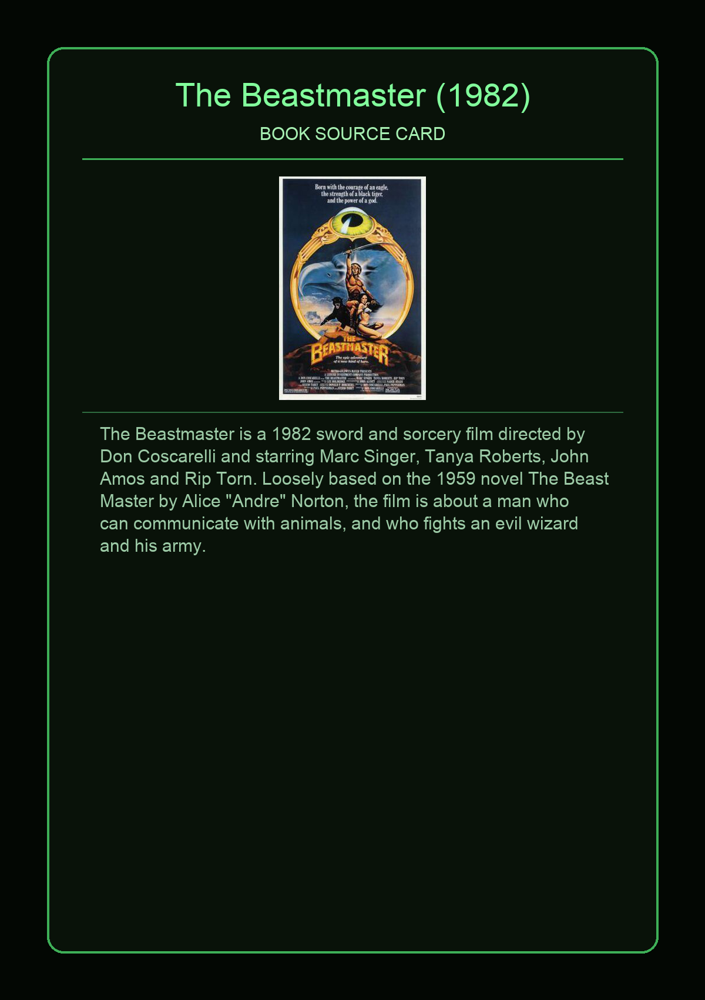
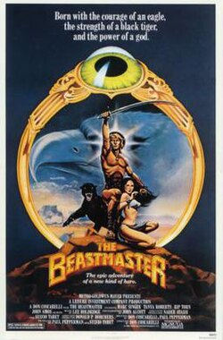

The Beastmaster is a 1982 sword and sorcery film directed by Don Coscarelli and starring Marc Singer, Tanya Roberts, John Amos and Rip Torn. Loosely based on the 1959 novel The Beast Master by Alice "Andre" Norton, the film is about a man who can communicate with animals, and who fights an evil wizard and his army.
This page aggregates references to the source material behind Name Lore entries.